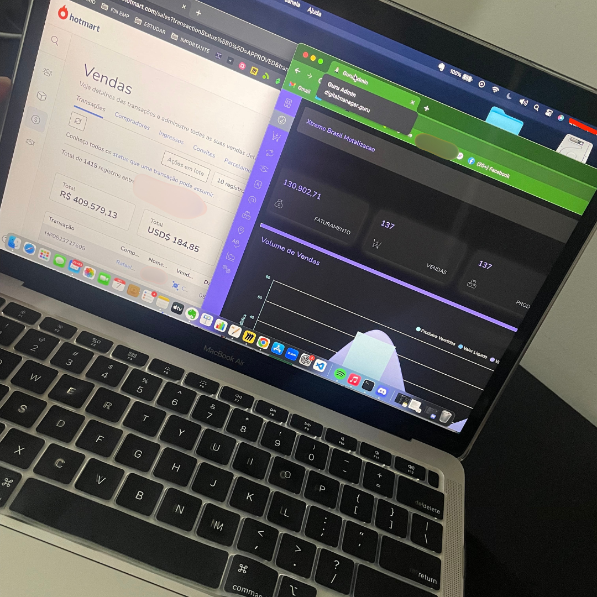
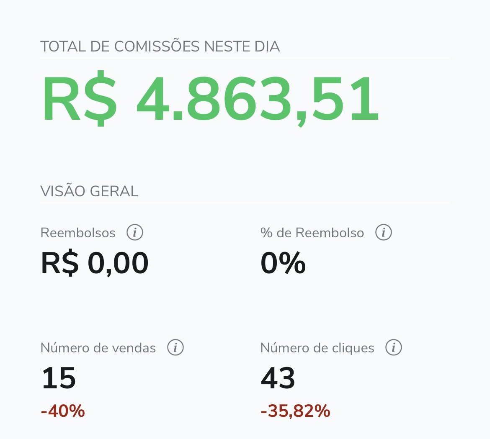
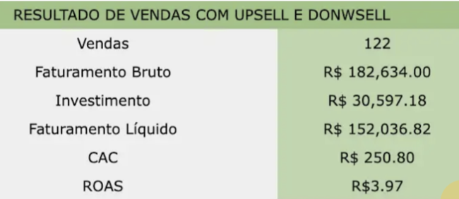
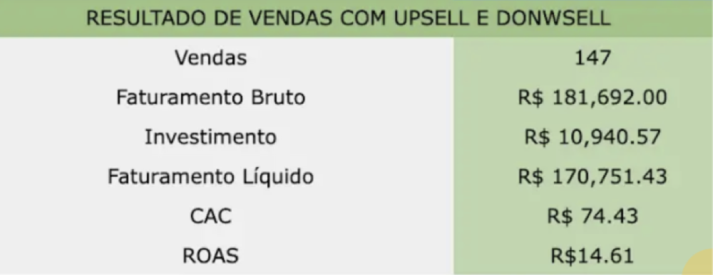
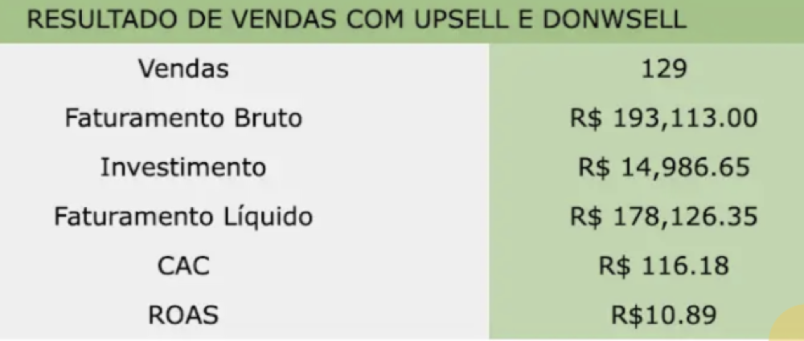
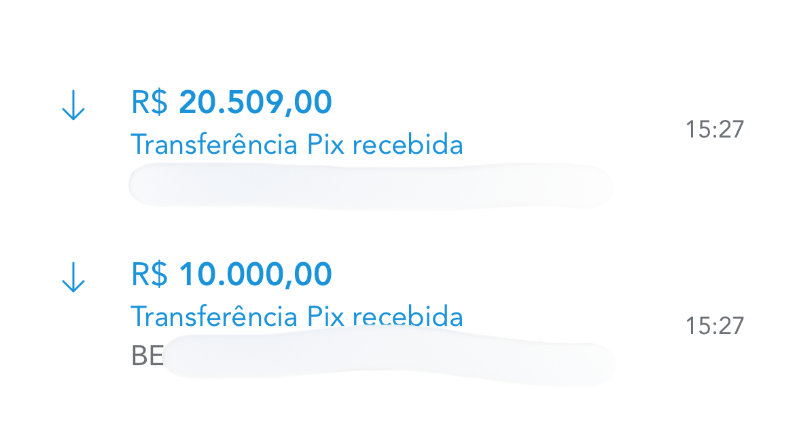
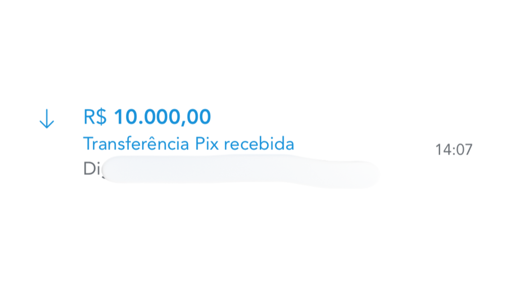
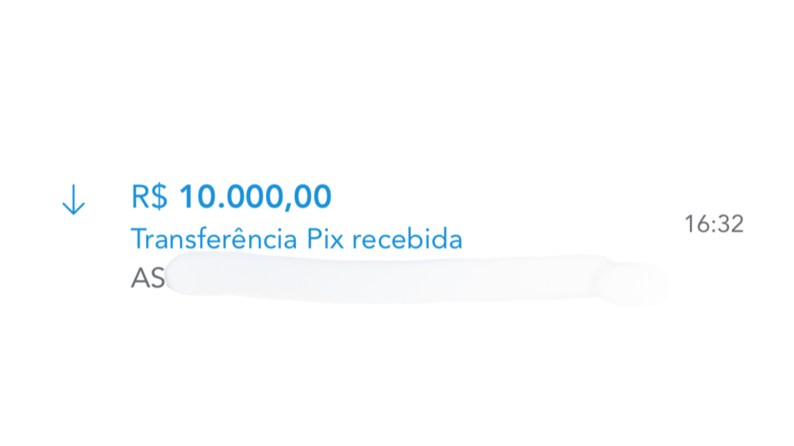

O sistema que faz as vendas de R$3K, R$10K e R$30K acontecer em silêncio — enquanto o resto do mercado ainda empurra cada call.
Como eu substituí agenda lotada, time inflado e call de vendas por uma engenharia de 4 etapas que gera venda antes da conversa começar — e como você pode começar a montar a sua hoje mesmo.
Você não montou um negócio pra continuar sendo o gargalo dele.
Mas é isso que acontece todos os dias.
A semana começa com call. A call termina com mais uma decisão que só você pode tomar. A decisão vira tarefa. A tarefa empurra outras três.
Na sexta-feira, o que sobrou de você não é o expert estratégico que construiu a reputação — é o operacional cansado tentando não deixar nada cair.
Olha de fora, parece sucesso.
Faturamento entrando. Cliente entregando depoimento. Indicação chegando.
Olha de dentro, é outra coisa.
É você sendo a única pessoa que sabe onde está cada arquivo, cada combinado, cada decisão dessa semana.
É a operação inteira parando se você tira três dias fora.
É a sensação silenciosa de que tudo que você construiu funciona — mas funciona porque você não para de empurrar.
Não é falta de método. Você já estudou método demais.
Não é falta de esforço. Você é dos que mais se esforçam.
É que a estrutura por trás do que você vende não foi projetada pra existir sem você.
Foi montada peça por peça, no improviso, ao longo dos anos — e cada peça nova ficou pendurada em alguma decisão sua, em algum critério que só você sabe aplicar.
Você não tem um negócio. Você tem uma extensão de você que cobra clientes.
É o expert que sustenta a operação no ombro. Não o dono que a operação sustenta de volta.
E a pergunta que ninguém te fez — que talvez você também tenha evitado fazer — é mais incômoda que qualquer resposta fácil:
Por que cada peça que você adiciona ao negócio acaba pendurada em você de novo?
Eu fui o cara que sustentava a operação no ombro.
Quanto mais eu entregava bem, mais o negócio dependia de mim entregar melhor ainda.
Cada vitória reforçava a estrutura que me prendia.
Eu trabalhava muito porque eu era a operação inteira.
E quando pensava em escalar, esbarrava sempre na mesma parede invisível — escalar significava clonar a única coisa que não tinha como ser clonada, que era eu.
Teve mês da estrutura antiga que gerei R$193 mil em faturamento.
Era o número que dava orgulho. Mas pra fechar R$193 mil eu tinha time, tinha sócio, tinha despesa fixa, tinha margem espremida no fim do mês — porque cada real faturado vinha com um custo escondido de operação, gestão, retrabalho, cliente difícil que ninguém queria atender mas tinha que ser atendido.
R$193 mil entrando significava muito menos do que parecia saindo.
E mais importante — significava eu, todo dia, sustentando uma estrutura que precisava de mim pra existir.
Hoje eu opero sozinho. Sem sócio. Sem time fixo. Sem operação que vive na minha agenda.
E a margem do que entra fica acima de 80%.
Saí da operação. Construí o que opera.
O que mudou não foi sorte, mercado ou esforço. Foi a estrutura por baixo do que eu vendia.
A diferença não está no quanto você sabe. Está em como o que você sabe está organizado.
Expertise solta — viva só na sua cabeça, nas calls, nas entregas que dependem de você — vende tempo. E tempo, todo mundo já entendeu, tem teto.
Expertise organizada — com lógica de entrega, lugar próprio dentro de uma estrutura — vende sem precisar te empurrar pra cada conversa.
Uma trabalha pra você. A outra trabalha você.
O que muda quando essa organização acontece não é mais um curso pra consumir, mais um funil pra montar, mais um método pra decorar.
É outra coisa. É um ativo.
Um ativo construído sobre o que você já sabe — mas operando com lógica própria, fora do seu esforço manual.
Eu chamo de MoneyMark™.
Não porque é nome bonito. Porque é exatamente isso que ela faz: transforma expertise em algo que carrega valor de mercado por conta própria, vende entre R$3K e R$30K por venda, e para de depender de você estar presente em cada etapa pra acontecer.
Uma MoneyMark™ se constrói sobre 4 pilares funcionando ao mesmo tempo.
Cada um resolve um pedaço diferente do que faz alguém escolher comprar de você por R$15K em vez de pagar R$497 pra outra pessoa.
PO$ICIONAR Arquitetura de Percepção de Valor
Antes de qualquer venda acontecer, o mercado precisa ter criado uma percepção específica e emocional sobre você. Não é feed bonito nem frase de autoridade na bio. É engenharia — linha por linha, pelo que você diz, pelo que não diz, pela ordem em que aparece.
Sem ela, você entra na caixinha mental do cliente como mais um. É comparado por preço. Esquecido na semana seguinte.
Com ela, o cliente chega na conversa de venda já tendo decidido. O preço para de ser objeção porque a percepção de valor já está instalada antes da call começar.
EXPERTI$E Engenharia de Oferta como Ativo
Percepção sem oferta clara vira autoridade que não converte. Tem audiência, tem reconhecimento — mas a venda continua dependendo de você improvisar argumento, ajustar preço, justificar entrega.
Sem ela, você cobra pelo que entrega — e o mercado sempre vai achar caro, porque entrega é confusão com peças soltas.
Com ela, você cobra pela transformação — e o mercado entende por que vale mais. O preço deixa de ser opinião. Vira consequência da arquitetura.
SISTEMA DE AQUISIÇÃO Previsível
Não é truque ou hack de algoritmo. É arquitetura de atenção: você sabe de onde vem cada lead, por que chega já filtrado pela percepção certa, e quanto custa cada um.
Sem isso, o negócio cresce em ciclos imprevisíveis.
Com isso, sua receita para de ser sorte. Vira número que você projeta pra trás e pra frente.
FRAMEWORK DE DECISÃO
Lead qualificado chegando de funil sem framework de decisão vira call de uma hora que termina em "vou pensar". Não porque o lead é ruim. Porque a decisão de comprar R$15K não se constrói durante a call — se constrói antes dela.
Sem esse framework, você gasta energia tentando vencer barganha e justificar preço.
Com ele, a venda acontece quase em silêncio. O cliente fala mais do que você. E quando você apresenta o investimento, ele já está pensando em quando começar — não em se vale.
As quatro juntas formam a MoneyMark™. E quando estão alinhadas, a venda deixa de ser ato de persuasão e gatilhos mentais.
Vira consequência óbvia.
Se isso já fez sentido pra você, não precisa ler o resto da página.
Se quiser ver o que está incluso e o processo que envolve isso, segue comigo.
Tudo isso existe como método, processo e entregável.
Os 4 pilares e a forma como se encaixam — com lugar próprio dentro de uma sequência. E com algo concreto pra você sair com ativos nas mãos ao final de cada etapa.
É isso que eu organizei no Plano DreamLife.
Uma sequência guiada de 4 métodos — cada um operando uma camada específica do que constrói uma MoneyMark™ que vende sozinha.
Você executa um, sai com algo pronto. Executa o próximo, esse algo ganha estrutura. Quando termina o quarto, sua MoneyMark™ está montada — não no slide, no mercado.
PO$ICIONAR Arquitetura de Percepção de Valor
Como ajustar ou criar a forma como o mercado entende quem você é, o que você resolve e por que só você resolve desse jeito — antes de qualquer call de venda acontecer.
Mecanismo do problema, mecanismo da solução, autoridade que justifica seu posicionamento, narrativa que sustenta a tensão, perfil de comunicador, tom e canais de distribuição.
EXPERTI$E Engenharia de Oferta como Ativo
Como transformar o que você já sabe num ecossistema de receita previsível — não numa oferta solta que depende de você empurrar todo mês.
Você mapeia os tipos de acesso que sua expertise pode gerar, identifica qual deles vira seu core — o produto gravitacional que puxa todos os outros — e estrutura a oferta principal com promessa, mecanismo nomeado, escopo, ticket e argumentos de venda.
SISTEMA DE AQUISIÇÃO PREVISÍVEL
Como construir um fluxo de demanda que não depende de post viralizar, indicação cair do céu ou você correr atrás de cada conversa.
Você define os canais que fazem sentido pra sua expertise (não os que todo mundo usa), o tipo de conteúdo que atrai lead já filtrado pela percepção correta e a cadência que mantém o pipeline rodando sem virar segundo emprego.
FRAMEWORK DE DECISÃO
Como fazer a venda acontecer sem virar call de uma hora terminando em "vou pensar". A decisão de comprar não se vence na conversa final — se constrói antes dela.
Você estrutura o script de venda que respeita a percepção já instalada, o fluxo de fechamento que respeita o estado emocional do lead em cada momento, e a sequência de objeções principais com a resposta certa pra cada uma.
Os 4 juntos formam o sistema que faz sua MoneyMark™ existir como ativo — vendendo entre R$3K e R$30K por venda, sem depender de você empurrar cada etapa.
Iniciando hoje, você recebe:
Existem 3 pontos onde a maioria trava na execução. Quem entra pra montar a própria MoneyMark™ recebe 3 aceleradores específicos pra cada um deles.
SISTEMA DE RECEITA IMEDIATA
O bloqueio mais comum no começo não é falta de método. É falta de caixa pra continuar executando com calma enquanto o método se instala.
MANUAL OPERACIONAL MONEYMARK™
Método sem execução guiada vira PDF não lido.
BIBLIOTECA DE PROMPTS ESTRATÉGICOS
A maior parte do trabalho dentro dos 4 métodos pode ser acelerada com IA — desde que os prompts sejam os certos. Prompt genérico gera output genérico, e output genérico não monta MoneyMark™.
Tudo o que você acabou de ler é o que eu opero na minha própria operação atualmente.
E o que já apliquei em parceiros pra gerar resultado deles também.
Não tenho turma cheia de aluno aplicando. O método não nasceu de curso que vende o próprio curso — nasceu de execução.
O que você vai ver abaixo é evidência cotidiana de 4 coisas: ticket alto acontece na rotina, volume não é evento isolado, a conversão que essa arquitetura entrega é diferente, e a consistência se sustenta.
01 · Venda de R$3.000
Não é uma venda de R$3 mil que aconteceu uma vez e virou case. É notificação chegando junto com notificação do Instagram — porque virou parte do dia comum.
Quando a percepção está instalada, a oferta está organizada, a aquisição roda e a decisão chega pronta, o ticket de R$3K para de ser exceção. Vira o normal da operação.
02 · Volume não é evento · é histórico

Mais de R$540 mil em vendas entre Hotmart e Guru. Mil e quinhentas transações somadas entre as duas plataformas.
Isso não acontece com sorte. Acontece quando a arquitetura está montada e a operação roda independente de você empurrar cada venda.
03 · A conversão que a arquitetura entrega

15 vendas em 43 cliques. Em um dia.
Conversão acima de 30% num funil de venda direta não é tráfego. É percepção instalada antes do clique acontecer.
É o que o Método 1 (Arquitetura de Percepção) entrega. É o que o Método 4 (Framework de Decisão) entrega. Quando os dois operam juntos, o lead que clica já decidiu antes.
04 · Histórico mensal



Faturamento acima de R$180K em meses diferentes. CAC controlado, ROAS na casa dos dois dígitos. Não é mês fora da curva — é o que o sistema sustenta quando está rodando.
Cada um desses 4 métodos, quando vendido individualmente, custa entre R$2K e R$5K. Implementado via consultoria, entre R$10K e R$30K.



Não estou inventando esse dado. É o que eu cobro hoje por programas focados em apenas um desses pilares — posicionamento, oferta, aquisição, conversão.
A diferença é que esses programas vendem um pilar de cada vez — e o cliente tentando integrar os 3 sozinho. O Plano DreamLife entrega os 4 construídos pra operarem juntos desde o primeiro passo.
E o preço de entrada não foi escolhido pra competir com esses programas individuais.
Foi escolhido pra que você consiga ser um case sem ter que desembolsar esse valor — e depois vir para programas diretamente comigo. Puro interesse: quanto mais resultado você tiver, mais eu serei bem pago por isso.
Tem uma conta que quase ninguém faz: quanto custa não entrar.
Não é dramática. É matemática simples — quando você calcula o que continua acontecendo enquanto a decisão fica em cima da mesa.
Em termos financeiros
R$497 dividido por 12 dá R$49 por mês.
Um único ajuste de preço, em uma única oferta sua, paga o ano inteiro. E ajuste de preço é o que o Método 2 (Engenharia de Oferta) força você a fazer nos primeiros 7 dias de aplicação.
Cada oferta que você vende hoje por R$497 e poderia estar vendendo por R$3.000 — porque a percepção e a estrutura justificariam — é R$2.500 deixados na mesa por venda.
Dez vendas por mês nesse formato: R$25 mil que entraram menores do que poderiam ter entrado.
Não é o que você não ganhou. É o que você ganhou menor do que deveria.
Em termos de energia
Cada mês sem essa arquitetura é mais um mês competindo na prateleira do preço.
Cliente que poderia ter te escolhido por percepção te escolhe por desconto. Lead que poderia ter chegado pré-decidido chega pra negociar. Conversa que poderia ter sido confirmação vira call de uma hora terminando em "vou pensar".
Nada disso aparece como prejuízo no extrato. Aparece como cansaço no fim do mês.
Em termos de tempo
Daqui a 1, 2, 3 anos, a expertise continua crescendo. A operação, não.
A pessoa que sabe muito segue empurrando manualmente o que deveria estar rodando.
Esse é o custo de não decidir. Não está no preço do programa. Está em tudo o que continua acontecendo enquanto você não o paga.
E se eu pagar e o método não fizer sentido pra mim?
Sendo bem direto.
Você tem 7 dias, contados do momento em que recebe o acesso, pra ver o conteúdo por dentro. Abrir o Método 1, ler o Manual Operacional, testar o Sistema de Receita Imediata, olhar a Biblioteca de Prompts.
Se em qualquer momento dentro dessa janela você concluir que isso não é pra você — não importa o motivo — você pede o reembolso e recebe os R$497 de volta. Sem questionário. Sem segunda chamada. Sem ter que justificar.
Não é garantia generosa. É honesta. Quem está confiante no que vende não precisa segurar o cliente que não quer ficar.
O Plano DreamLife
Você já viu a arquitetura. Já viu o que custa não decidir. Já sabe como o risco está dividido. Resta você fazer a sua parte.
- MÉTODO 1 — PO$ICIONARCanvas de Percepção preenchido
- MÉTODO 2 — EXPERTI$EOferta principal definida com promessa, mecanismo, escopo, preço
- MÉTODO 3 — SISTEMA DE AQUISIÇÃOMapa de Aquisição com canais e cadência
- MÉTODO 4 — FRAMEWORK DE DECISÃOScript de venda + fluxo de fechamento + mapa de objeções
- BÔNUS 1Sistema de Receita Imediata
- BÔNUS 2Manual Operacional MoneyMark™
- BÔNUS 3Biblioteca de Prompts Estratégicos
- GARANTIA DE 7 DIASReembolso sem questionário
A decisão de entrar n'O Plano DreamLife não é a decisão de comprar mais um curso.
É a decisão de parar de operar improvisando.
E começar a operar dentro de uma arquitetura que faz o ticket de R$3K, R$10K, R$30K virar consequência do que está montado — não exceção do que você empurra.
Quem decide agora, começa hoje.
Quem adia, continua pagando o custo que acabamos de calcular. Só que sem o método.